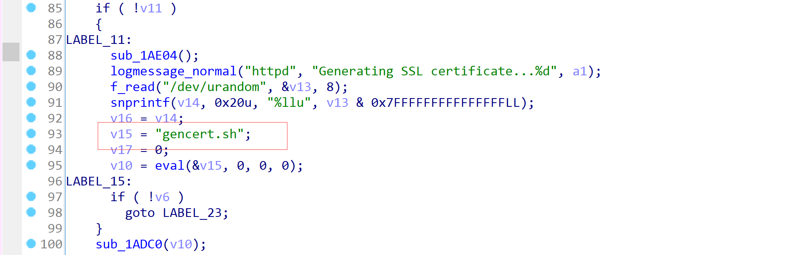
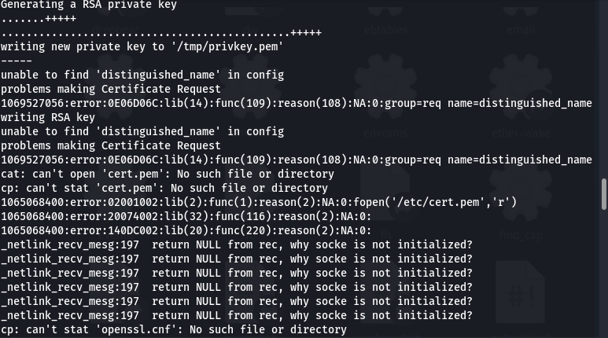
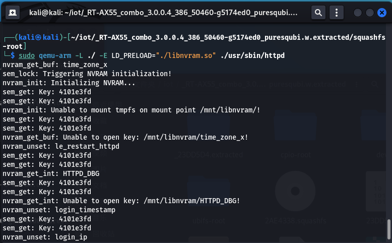
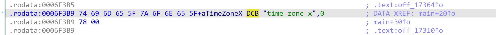
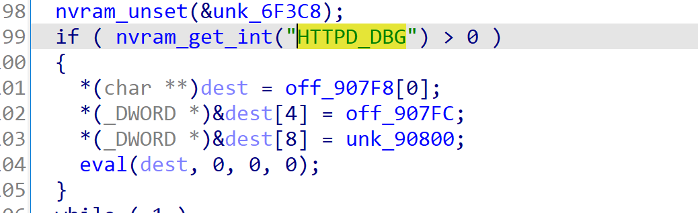
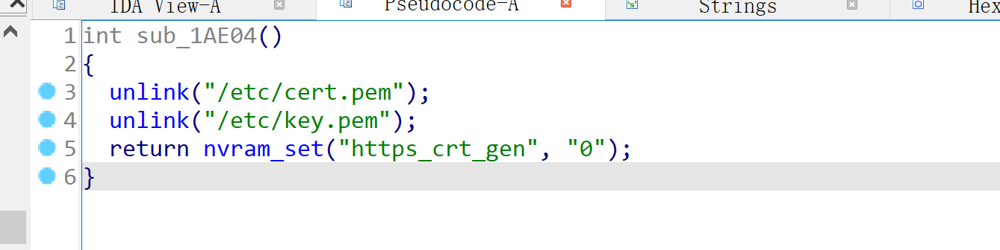
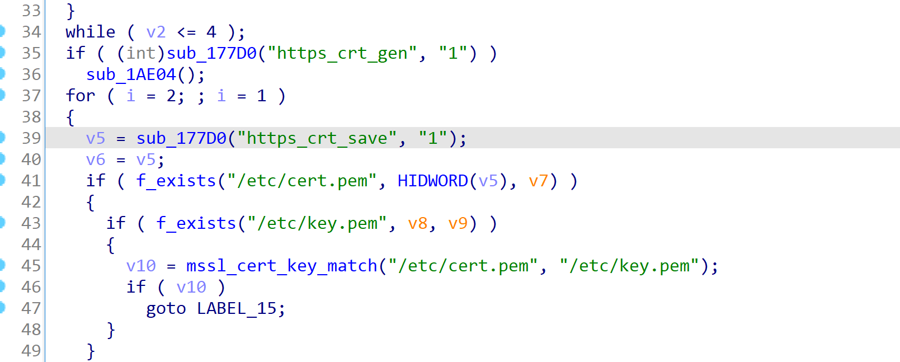
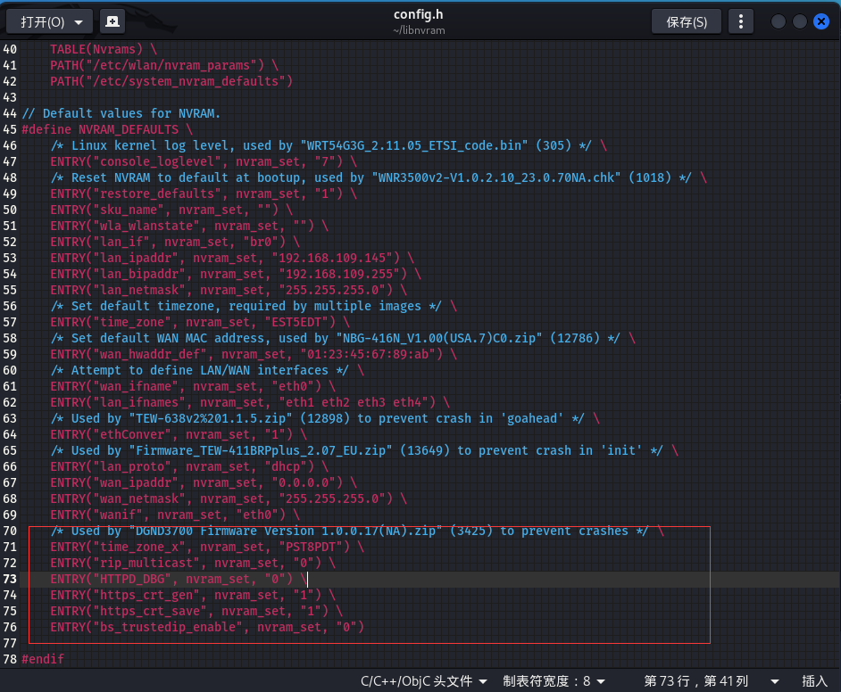
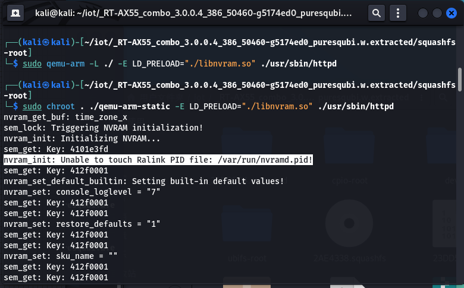
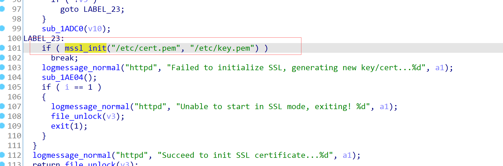

RT-AX55环境搭建
启动方式
方式一
sudo chroot . ./qemu-arm-static -E LD_PRELOAD="./libnvram.so" ./usr/sbin/httpd
方式二
- 复制 qemu-arm-static 到 squashfs-root 中
where qemu-arm-static
cp /usr/bin/qemu-arm-static ./squashfs-root/
- 启动
cd squashfs-root
sudo chroot . ./qemu-arm-static ./usr/sbin/httpd
启动时的错误处理
遇见 openssl 相关错误
错误原因代码：
运行 gencert.sh

在调用 nvram 相关命令时出错，原因不存在 nvram
#!/bin/sh
SECS=1262278080
cd /etc
NVCN=`nvram get https_crt_cn`
if [ "$NVCN" == "" ]; then
NVCN="router.asus.com"
fi
cp -L openssl.cnf openssl.config
I=0
for CN in $NVCN; do
echo "$I.commonName=CN" >> openssl.config
echo "$I.commonName_value=$CN" >> openssl.config
I=$(($I + 1))
done
........ 以上是部分代码
报错截图：

解决办法
nvram 中保存了设备的一些配置信息，而程序运行时需要读取配置信息，由于缺少对应的外设，因此会报错。要编译 nvram 文件，可以使用 Firmadyne 提供的 libnvram 库，因为其支持很多的 api。
libnvram 运行中其他错误
运行后，发现仍然缺少一些键值对，
错误截图：

解决方法
返回修改 libnvarm 的 config.h 文件添加对应的键值对
通过 ida 中 strings 搜索对应的 key 进行 value 的查找
time_zone_x

value
PST8PDT
HTTPD_DBG

Value
0 or 1
https_crt_gen

Value
0 or 1
https_crt_save

Value
0 or 1
修改后

nvram_init: Unable to touch Ralink PID file: /var/run/nvramd.pid!
错误截图：

解决方法
手动 touch 一个文件进去
touch var/run/nvramd.pid
cp: can’t stat ‘/mnt/libnvram.override/*’: No such file or directory
一样创建一个
mkdir mnt/libnvram.override
ssl 相关错误，例如 lib(2):func(1):reason(2):NA:0:fopen(‘/etc/cert.pem’,‘r’) 等一系列问题
解决方法
根据错误搜索/etc/cert.pem

通过分析上下文 + 本地文件生成可以知道，脚本 gencert.sh 并没有良好工作，需要我们在本地利用 openssl 生成对应的文件并 copy 到 etc 文件夹下即可
- 生成 privkey.pem 及 cert.csr
openssl req -new -out /tmp/cert.csr -keyout /tmp/privkey.pem -newkey rsa:2048 -passout pass:password
- 生成 key.pem
openssl rsa -in /tmp/privkey.pem -out key.pem -passin pass:password
- 生成 cert.pem
RANDFILE=/dev/urandom openssl req -x509 -new -nodes -in /tmp/cert.csr -key key.pem -days 3653 -sha256 -out cert.pem
- 生成 server.pem
cat key.pem cert.pem > server.pem
- 复制到/tmp/etc/下
cp server.pem cert.pem cert.crt key.pem ./tmp/etc
再次运行 搞定